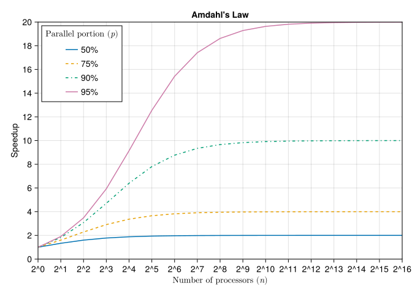

Quantity has a quality all its own. - Attributed to Vladimir Lennin
10.1 In this section
Fundamentals of parallel workloads, different mechanisms to distribute work: vectorization, multi-threading, GPU, and multi-device workflows. Different programming models: map-reduce, arrays, and tasks.
10.2 Amdahl’s Law and the Limits of Parallel Computing
An important ground-truth in computing is that there is an upper limit to how fast a workload can be sped up through distributing the workload among multiple processor units. For example, if there is a modeling workload wherein 90% of the work is independent (say policy or asset level calculations) and the remaining 10% of the workload is an aggregate (say company or portfolio level), then the theoretical maximum speedup of the process is 10x faster (1 / 90% parallelizable load). This is captured in a law known as Amdahl’s Law and it reflects the theoretical maximum speedup a workload could see. In practice, the speedup is worse than this due to overhead of moving data around, scheduling the tasks, and aggregating results. This is why in many cases a good effort in sequential workloads (see @#sec-performance-single) is often a more fruitful effort than trying to parallelize some workloads.
That said, there are still many modeling use-cases for parallelization. Modern investment and insurance portfolios can easily contain 100’s of thousands or millions of seriatim holdings. In many cases, these can be evaluated independently, though on the often times there is interaction with the total portfolio (contract dividends, non-guaranteed elements, profit sharing, etc.). Further, even if the holdings are not parallelizable across the holdings dimension, we are often interested in independent evaluations across economic scenarios which is amendable to parallelization. \[
S(n) = \frac{1}{(1-p) + \frac{p}{n}}
\]
Where:
\(S(n)\) is the theoretical speedup of the execution of the whole task
\(n\) is the number of processors
\(p\) is the proportion of the execution time that benefits from improved resources
We can visualize this for different combinations of \(p\) and \(n\) in Figure 10.1.
usingCairoMakiefunctionamdahl_speedup(p, n)return1/ ((1- p) + p / n)endfunctionmain() fig =Figure(size=(800, 600)) ax =Axis(fig[1, 1], title="Amdahl's Law", xlabel=L"Number of processors ($n$)",ylabel="Speedup", xscale=log2, xticks=2.^ (0:16), xtickformat=x ->"2^".*string.(Int.(log.(2, x))), yticks=0:2:20 ) n =2.^ (0:16) parallel_portions = [0.5, 0.75, 0.9, 0.95] linestyles = [:solid, :dash, :dashdot, :solid]for (i, p) inenumerate(parallel_portions) speedup = [amdahl_speedup(p, ni) for ni in n]lines!(ax, n, speedup, label="$(Int(p*100))%", linestyle=linestyles[i])endxlims!(ax, 1, 2^16)ylims!(ax, 0, 20)axislegend(ax, L"Parallel portion ($p$)", position=:lt) figendmain()
┌ Warning: Found `resolution` in the theme when creating a `Scene`. The `resolution` keyword for `Scene`s and `Figure`s has been deprecated. Use `Figure(; size = ...` or `Scene(; size = ...)` instead, which better reflects that this is a unitless size and not a pixel resolution. The key could also come from `set_theme!` calls or related theming functions.
└ @ Makie ~/.julia/packages/Makie/GtFuI/src/scenes.jl:227

Figure 10.1: Theoretical upper bound for speedup of a workload given the parallelizable portion \(p\) and number of processors \(n\).
With this understanding, we will be able to set expectations and analyze the benefit of parallelization.
10.3 Types of Parallelism
Parallel processing comes in different flavors and is related to the details of hardware as discussed in Chapter 8. We will necessarily extend the discussion of hardware here, as parallelization is (mostly) inextricably tied to hardware details (we will revisit this in Section 10.8).
Major types of computational parallelism highlighting their key characteristics, advantages, and potential drawbacks.
Type
Description
Strengths
Weaknesses
Vectorization (SIMD)
Performs same operation on multiple data points simultaneously
Efficient for data-parallel tasks, uses specialized CPU instructions
Limited to certain types of operations, data must be contiguous
Multi-Threading
Executes multiple threads concurrently on a single CPU
Good for task parallelism, utilizes multi-core processors effectively
Overhead from thread management, potential race conditions
GPU
Uses graphics processing units (GPUs) for parallel computations
Excellent for massively parallel tasks, high throughput
Specialized programming required, data transfer overhead
Multi-Device / Distributed
Spreads computation across multiple machines or devices
Scales to very large problems, can use heterogeneous hardware
Complex to implement and manage, network latency issues
10.4 Vectorization
Vectorization in the context of parallel processing refers to special circuits within the CPU wherein the CPU will load multiple data units (e.g. 4 or 8 floating point numbers) in a contiguous block and perform the same instruction on them at the same time. This is also known as SIMD, or Single-Instruction Multiple Data.
The requirements for SIMD-able code are that:
The intended section for SIMD is inside the inner-most loop.
There are no branches (if-statements) inside the loop body.
Indexing an array is actually a possible branch, as two cases could arise: the index is inbounds or out-of-bounds. To avoid this, either use for x in collection, for i in eachindex(collection) or for i in 1:n; @inbounds collection[i] though the last of these is discouraged in favor of ther prior, safer options.
usingBenchmarkToolsfunctionprevent_simd(arr) sum =0for x in arrif x >0 sum += xendendreturn sumendfunctionallow_simd(arr) sum =0for x in arr sum +=max(x, 0)endreturn sumendlet x =rand(10000)@btimeprevent_simd($x)@btimeallow_simd($x)end
In testing the above code, the allow_simd version should be several times faster than the prevent_simd example. The reason is that prevent_simd has a branch (if x > 0) where the behavior of the code may change depending on the value in arr. Conversely, the behavior of allow_simd is always the same in each iteration, no matter the value of x. This allows the compiler to generate vectorized code automatically.
Note that the compiler is able to identify vectorizable code in many cases, though through some cases may benefit from a more manual hint to the compiler through macro annotations (see ?@simd for details).
Other types of parallelism that we will discuss in this chapter have some risk of errors or data corruption if not used correctly. SIMD isn’t prone to issues like this because if the code is not SIMD-able then the compiler will not auto-vectorize the code block.
10.4.1 Hardware
Vectorization is hardware dependent. If the CPU does not support vectorization you will not see speedups from it. Many consumer and professional chips have AVX2 (Advanced Vector Extensions, with the 2 signifying second-generation 256 bit width, allowing four simultaneous 64-bit operations). The next generation is AVX512, having twice the SIMD capacity as AVX2. However, as of 2025 most consumer chips do not yet have that and commercial chips may not actually be faster than the AVX2 due to thermal restrictions (SIMD uses more power and generates more heat).
10.4.2 Additional Packages
Some additional packages to be aware of include:
LoopVectorization.jl which can enhance the vectorized loops even further, such as handling the “tail” of a vectorized loops more efficiently than the base compiler. The “tail” refers to situations like where you have a vector width of 8, but don’t have a collection that’s a nice multiple of 8 (say 1001 elements).
Octavian.jl implements a linear algebra-like library, utilizing parallelism via vectorization to generate efficent code for the system it’s running on.
Tulio.jl is an einsum library, a domain-specific language for tensor (a specific subset of vectors) operations, common in machine learning and linear algebra.
10.5 Multi-Threading
10.5.1 Tasks
To understand mulithreading examples, we first need to discuss Tasks, which are chunks of computation that get performed together, but after which the computer is free to switch to a new task. Technically, there are some instructions within a task that will let the computer pause and come back to that task later (such as sleep). Tasks are do not, by themselves, allow for multiple computations to be performed in parallel. For example, one task might be loading a data file from persistent storage into RAM. After that task is complete, the computer continues on with another task in the queue (rendering a web page, playing a song, etc.). In this way even with a single processor and core, a computer could be “doing multiple things at once” (or “multi-tasking”) even though nothing is running in parallel. The scheduling of the tasks is handled automatically by Julia and the operating system.
Here’s an example of a couple of tasks where we write to an array. The second task actually writes to the array first, since we asked the first task to sleep (which allows the computer to yield to other tasks in the queue)1.
Channels are a way to communicate data in an ordered way between tasks. You specify a type of data that the buffer will contain and how many elements it can hold. It then stores items (via put!) in a first-in-first-out (FIFO) queue, which can be popped off the queue (via `take!) by other tasks.
Here’s an example of a system which generates trades in the financial markets at random time intervals, and a monitoring tasks takes the results and tabulates running statistics:
letfunctiontrade_producer(channel,i)1sleep(rand())2 profit =randn()put!(channel, profit)println("Producer: Trade Result #$i$(round(profit, digits=3))")endfunctionportfolio_monitor(channel,n) sum =0.03for _ in1:n profit =take!(channel) sum += profitprintln("Monitor: Received $(round(profit, digits=3)), Cumulative profit: $(round(sum, digits=3))")endend4 channel =Channel{Float64}(32)# Start producer and consumer tasks5@syncbegin6for i in1:5; @asynctrade_producer(channel,i); end@asyncportfolio_monitor(channel,5)end# Close the channel and wait for tasks to finishclose(channel)end
1
Random sleep between 0 and 1 seconds
2
Generate a random number from standard normal distribution to simulate profit or loss from a trade
3
In this teaching example, we’ve limited the system to produce just five “trades”. In practice, this could be kept running indefinitely via, e.g., while true.
4
Create a channel with a buffer size of 32 floats (in this limited example, we could have gotten away with just 5 since that’s how many the demonstration produces). In practice, you want this to be long enough that the consumer of the channel never gets so far behind that the channel fills up. The channel is created outside of the @sync block so that channel is in scope when we close it.
5
@sync waits (like wait(task)) for all of the scheduled tasks within the block to complete before proceeding with the rest of the program.
6
@async does the combination of creating a task via @task and schedule-ing in one, simpler call.
Producer: Trade Result #4 0.41
Monitor: Received 0.41, Cumulative profit: 0.41
Producer: Trade Result #5 0.688
Monitor: Received 0.688, Cumulative profit: 1.098
Producer: Trade Result #2 -0.166
Monitor: Received -0.166, Cumulative profit: 0.932
Producer: Trade Result #3 -1.044
Monitor: Received -1.044, Cumulative profit: -0.112
Producer: Trade Result #1 0.936
Monitor: Received 0.936, Cumulative profit: 0.824
This is really useful for handling events that are “external” to our program. If we were just doing a modelign excersise using static data, then we could control the order of processing and not need to worry about monitoring a volatile source of data. Nonetheless, tasks can still be useful in some cases even if a model is not using “live” data: for example if one of the steps in a model is to load a very large dataset, it may be possible to perform some computations while chunked task requests are queued to load more data from the disk.
while Julia’s garbage collector will eventually clean up unclosed channels, it’s a good practice to explicitly close them to ensure proper resource management, clear signaling of completion, and to avoid potential blocking or termination issues in your programs.
An additional thing to be aware of: if the task never finishes properly inside the @sync, then your program may get stuck in an infite loop and hang. Such as if one of the tasks never has a termination conidtion such as an upper bound on a loop, or a clear way to break out of a while true loop. While not different than a normal loop, such issues become less obvious underneath the layer of task abstractions.
The key takeaway for tasks is that it’s a way to chunk work into bundles that can be run in a concurrent fashion, even if nothing is technically being processed in parallel. The multi-threading and parallel programming paradigms sections build off of tasks so an understanding of tasks is helpful. However, some of the higher level libraries hide the task-based building blocks from you as the user/developer and so an intricate understanding of tasks is not required to be successful in parallelizing your Julia code.
10.5.2 Multi-Threading Overview
When a program starts on your computer, a process is created which is where the operating system allocates some overhead items (keeping track of the the code and memory allocations and layout) and block of memory in RAM that can be utilized by that process. Different processes do not have access to each other’s allocated memory.
Note
Readers may be familar with starting Excel in different processes. When Microsoft Excel is opened multiple times, in different processes, then the workbooks in each respective process do not share memory and cannot create links or use full copy/paste functionality between them. It’s only when workbooks are opened within the same process that the workbooks may seamslessley talk to each other.
Within each process, a main thread is created. That thread is where the running of the code occurs. For the level of the discussion here, you can mainly think of a process as a container with shared memory for threads, which do the real work (as illustrated in Figure 10.2). Besides the main thread, other threads can be created within the process and access the same shared memory.
Figure 10.2: When a program starts, the operating system creates a process for which multiple threads (a main thread plus optional additional threads) share memory.
The advantage of threads is that within a single physical processor, there may be multiple cores. Those cores can access the shared process memory and run tasks from different threads simultaneously. This is a technique that takes advantage of modern processor architecture wherein several (sometimes as many as 32 or more) cores exist on the same chip.
Note
Technically, there are different flavors of threading. While not critical for the understanding and modeling-focused dicsussion here, for completeness here is a bit more detail on different thread types.
Recall that Tasks are chunks of computation that get performed together, but after which the computer is free to switch to a new task. For example, one task might be loading a data file from persistent storage into RAM. After that task is complete, the computer continues on with another task in the queue (rendering a web page, playing a song, etc.). In this way even with a single processor and core, a computer could be “doing multiple things at once” (or “multi-tasking”) even though nothing is running in parallel.
Operating System Threads or just Threads are managed (as the name implies) at the operating system level. The benefit to this is that operating system level threads have more power: the operating system can pause or limit throughput on running programs if the operating system needs the resources for something it deems higher priority. It’s technically possible to use this power to force a higher priority for your own code, but Julia and many other languages do not offer creating of these types of threads in favor of the next type of threads. Operating system threads have a higher amount overhead (time and memory) involved in creating and destroying the threads.
Green threads, cooperative threads, fibers, or user-threads are the type of threads that Julia provides. They are managed at the process (Julia) level and don’t have as much overhead in their creation as operating system threads. Also in Julia, a thread is implemented via Tasks
Parallelism in modern computing comes in many flavors, occurs at many different levels (hardward, OS, software, network), and has many different implementations of similar concepts. The terminology of threading in practice and online documentation is confusing and prone to confusion. If you are having a discussion or asking a question, feel free to take the time to ask for clarification on the terminology being used at a given point in time.
Important
To use multi-threading, Julia needs to be started with more than one thread. This can be done by either setting the environment variable JULIA_NUM_THREADS to either auto or specify a number like 4. You can also specify how many threads to start julia with if given the -t command line argument (such as running julia -t 4 to start Julia with four threads from the command line). For the examples in this book and how many threads are used, see Section 5.2 for the system settings.
Why doesn’t it automatically start with more than one thread? Between “hyperthreading” (synthetic additional thread capacity), multi-core architectures, and the different types of threads it’s actually difficult to predict how many threads will be optimal for a given system. Julia’s current default is to take the more conservative approach and start single-threaded unless otherwise specified. The “auto” option is a best-guess but can, on certain systems and configurations, be very bad for performance. The authors recommend for most common systems to just use “auto”.
10.5.2.1 Multi-Threading Pitfalls
Different threads being able to access the same memory is a double-edged sword. It is useful because we do not need to create multiple copies of the data in RAM or in the cache2 and can improve the overall throughput of our usually memory-bandwidth-limited machines. The downside is that if we are mutating the shared data for which our program relies upon, then our program may produce unintended results if the modification occurs carelessly. There are a couple of related issues to be aware of:
10.5.2.1.1 Race Conditions
The first issue is known as a race condition, which occurs when a block of memory has been read from or written to in an unintended order. For example, if we have two threads which are accumulating a sub-total, each process may read the running sub-total before the other thread has finished it’s update.
In the following example, we use the Threads.@threads to tell Julia to automatically distribute the work across threads.
functionsum_bad(n) subtotal =0Threads.@threadsfor i in1:n subtotal += iend subtotalendsum_bad(100_000)
2187521411
The result of this should be that subtotal doesn’t equal 5000050000 because the different threads pick up the subtotal before the other thread finishes adding it’s current value. As a result, when one of the threads finishes it’s work another may be starting from a place that ignores the updated value.
10.5.2.2 Avoiding Multi-threading Pitfalls
We will cover several ways to manage multi-threading race conditions, but it is the recommendation of the authors to primarily utilize higher level library code, which will be demonstrated after covering some of the more basic, manual techniques.
10.5.2.2.1 Chunking up work into single-threaded work
In this example, we can correct sum_bad by splitting the work into different threads, each of which is independent. Then, we can aggregate the results of each of the chunks.
functionsum_single(a) s =0for i in a s += iend send@btimesum_single(1:100_000)
1.166 ns (0 allocations: 0 bytes)
5000050000
Note that in the single-threaded case, Julia is able to identify this common pattern and use a shortcut, calculating the sum of the integers \(1\) through \(n\) as \(\frac{n(n+1)}{2}\).
functionsum_chunker(a)chunks =Iterators.partition(1:a, a ÷Threads.nthreads()) tasks =map(chunks) do chunkThreads.@spawnsum_single(chunk)end chunk_sums =fetch.(tasks)returnsum_single(chunk_sums)end@btimesum_chunker(100_000)
1.158 μs (34 allocations: 2.52 KiB)
5000050000
10.5.2.2.2 Using Locks
Locks prevent memory from being accessed from more than one thread at a time.
functionsum_with_lock(n) subtotal =0 lock =ReentrantLock()Threads.@threadsfor i in1:nBase.@lock lock begin subtotal += iendend subtotalend@btimesum_with_lock(100_000)
6.380 ms (199483 allocations: 3.05 MiB)
5000050000
10.5.2.2.3 Using Atomics
Atomics are certain primitive values with a reduced set of operations for which Julia and the compiler can automatically create thread-safe code. This is often significantly faster than the context-switching overhead needed with locking and unlocking memory for threaded tasks. Compared with locks, atomics are simpler to implement and easier to reason about. The downside is that atomics are limited to the available primitive atomics types and methods.
functionsum_with_atomic(n) subtotal =Threads.Atomic{Int}(0)Threads.@threadsfor i in1:nThreads.atomic_add!(subtotal, i)end subtotal[]end@btimesum_with_atomic(100_000)
478.542 μs (22 allocations: 2.16 KiB)
5000050000
10.5.2.2.4 Higher Level Libraries
10.5.2.2.4.1 OhMyThreads
ThreadsX.jl provides the threaded versions of essential functions such as tmap, tmapreduce,tcollect, and tforeach (see Table 5.1). In most cases, the chunking and data sharing is handled automatically for you.
[ Info: Precompiling OhMyThreads [67456a42-1dca-4109-a031-0a68de7e3ad5]
[ Info: Precompiling InverseFunctionsUnitfulExt [f5f6e0dd-5310-5802-bcb2-1cb72ad693d4]
Precompiling AccessorsIntervalSetsExt
✓ Accessors → AccessorsIntervalSetsExt
✓ Accessors → AccessorsStaticArraysExt
2 dependencies successfully precompiled in 1 seconds. 17 already precompiled.
[ Info: Precompiling AccessorsIntervalSetsExt [727f68c9-d1d4-5b40-b284-36502e629768]
┌ Warning: Module Accessors with build ID fafbfcfd-95ca-9144-0001-2d84136d8a7a is missing from the cache.
│ This may mean Accessors [7d9f7c33-5ae7-4f3b-8dc6-eff91059b697] does not support precompilation but is imported by a module that does.
└ @ Base loading.jl:1948
[ Info: Skipping precompilation since __precompile__(false). Importing AccessorsIntervalSetsExt [727f68c9-d1d4-5b40-b284-36502e629768].
Precompiling AccessorsStructArraysExt
✓ Accessors → AccessorsStructArraysExt
1 dependency successfully precompiled in 0 seconds. 27 already precompiled.
[ Info: Precompiling AccessorsStructArraysExt [deedf894-762e-575a-ad8b-1df4bba63293]
┌ Warning: Module Accessors with build ID fafbfcfd-95ca-9144-0001-2d84136d8a7a is missing from the cache.
│ This may mean Accessors [7d9f7c33-5ae7-4f3b-8dc6-eff91059b697] does not support precompilation but is imported by a module that does.
└ @ Base loading.jl:1948
[ Info: Skipping precompilation since __precompile__(false). Importing AccessorsStructArraysExt [deedf894-762e-575a-ad8b-1df4bba63293].
[ Info: Precompiling AccessorsStaticArraysExt [91548973-bbcf-5128-ac3c-c8b871e934a5]
┌ Warning: Module Accessors with build ID fafbfcfd-95ca-9144-0001-2d84136d8a7a is missing from the cache.
│ This may mean Accessors [7d9f7c33-5ae7-4f3b-8dc6-eff91059b697] does not support precompilation but is imported by a module that does.
└ @ Base loading.jl:1948
[ Info: Skipping precompilation since __precompile__(false). Importing AccessorsStaticArraysExt [91548973-bbcf-5128-ac3c-c8b871e934a5].
Precompiling AccessorsUnitfulExt
✓ Accessors → AccessorsUnitfulExt
1 dependency successfully precompiled in 1 seconds. 22 already precompiled.
[ Info: Precompiling AccessorsUnitfulExt [0f33c9ce-b40b-5f58-839e-64dee873ac84]
┌ Warning: Module Accessors with build ID fafbfcfd-95ca-9144-0001-2d84136d8a7a is missing from the cache.
│ This may mean Accessors [7d9f7c33-5ae7-4f3b-8dc6-eff91059b697] does not support precompilation but is imported by a module that does.
└ @ Base loading.jl:1948
[ Info: Skipping precompilation since __precompile__(false). Importing AccessorsUnitfulExt [0f33c9ce-b40b-5f58-839e-64dee873ac84].
Precompiling BangBangChainRulesCoreExt
✓ BangBang → BangBangTablesExt
✓ BangBang → BangBangChainRulesCoreExt
✓ BangBang → BangBangStaticArraysExt
3 dependencies successfully precompiled in 1 seconds. 39 already precompiled.
[ Info: Precompiling BangBangChainRulesCoreExt [47e8a63d-7df8-5da4-81a4-8f5796ea640c]
┌ Warning: Module BangBang with build ID fafbfcfd-f30d-2f96-0001-2d840221de43 is missing from the cache.
│ This may mean BangBang [198e06fe-97b7-11e9-32a5-e1d131e6ad66] does not support precompilation but is imported by a module that does.
└ @ Base loading.jl:1948
[ Info: Skipping precompilation since __precompile__(false). Importing BangBangChainRulesCoreExt [47e8a63d-7df8-5da4-81a4-8f5796ea640c].
[ Info: Precompiling BangBangStaticArraysExt [a9f1882a-14fa-573e-a12d-824431257a23]
┌ Warning: Module BangBang with build ID fafbfcfd-f30d-2f96-0001-2d840221de43 is missing from the cache.
│ This may mean BangBang [198e06fe-97b7-11e9-32a5-e1d131e6ad66] does not support precompilation but is imported by a module that does.
└ @ Base loading.jl:1948
[ Info: Skipping precompilation since __precompile__(false). Importing BangBangStaticArraysExt [a9f1882a-14fa-573e-a12d-824431257a23].
Precompiling BangBangStructArraysExt
✓ BangBang → BangBangStructArraysExt
1 dependency successfully precompiled in 1 seconds. 37 already precompiled.
[ Info: Precompiling BangBangStructArraysExt [d139770a-8b79-56c4-91f8-7273c836fd96]
┌ Warning: Module BangBang with build ID fafbfcfd-f30d-2f96-0001-2d840221de43 is missing from the cache.
│ This may mean BangBang [198e06fe-97b7-11e9-32a5-e1d131e6ad66] does not support precompilation but is imported by a module that does.
└ @ Base loading.jl:1948
[ Info: Skipping precompilation since __precompile__(false). Importing BangBangStructArraysExt [d139770a-8b79-56c4-91f8-7273c836fd96].
[ Info: Precompiling BangBangTablesExt [476361b5-ac10-5c09-8bec-30d098a22a5b]
┌ Warning: Module BangBang with build ID fafbfcfd-f30d-2f96-0001-2d840221de43 is missing from the cache.
│ This may mean BangBang [198e06fe-97b7-11e9-32a5-e1d131e6ad66] does not support precompilation but is imported by a module that does.
└ @ Base loading.jl:1948
[ Info: Skipping precompilation since __precompile__(false). Importing BangBangTablesExt [476361b5-ac10-5c09-8bec-30d098a22a5b].
1.208 μs (31 allocations: 2.42 KiB)
5000050000
10.5.2.2.4.2 ThreadsX
ThreadsX.jl is built off of the wonderful Transducers.jl package, though the latter is a bit more advanced (more abstract, but as a result more composable and powerful). ThreadsX provides threaded versions of many popular base functions. It offers a wider set of readymade threaded functions, but has a much more complex codebase. For the vast majority of threading needs, OhMyThreads.jl should be sufficent and performant. See the documentation for all of the implemented functions, but for our illustrative example:
Precompiling ThreadsX
✓ MicroCollections
✓ Transducers
✓ Transducers → TransducersReferenceablesExt
✓ Transducers → TransducersOnlineStatsBaseExt
✓ ThreadsX
5 dependencies successfully precompiled in 3 seconds. 72 already precompiled.
[ Info: Precompiling ThreadsX [ac1d9e8a-700a-412c-b207-f0111f4b6c0d]
┌ Warning: Module BangBang with build ID fafbfcfd-f30d-2f96-0001-2d840221de43 is missing from the cache.
│ This may mean BangBang [198e06fe-97b7-11e9-32a5-e1d131e6ad66] does not support precompilation but is imported by a module that does.
└ @ Base loading.jl:1948
[ Info: Skipping precompilation since __precompile__(false). Importing ThreadsX [ac1d9e8a-700a-412c-b207-f0111f4b6c0d].
[ Info: Precompiling MicroCollections [128add7d-3638-4c79-886c-908ea0c25c34]
┌ Warning: Module Accessors with build ID fafbfcfd-95ca-9144-0001-2d84136d8a7a is missing from the cache.
│ This may mean Accessors [7d9f7c33-5ae7-4f3b-8dc6-eff91059b697] does not support precompilation but is imported by a module that does.
└ @ Base loading.jl:1948
[ Info: Skipping precompilation since __precompile__(false). Importing MicroCollections [128add7d-3638-4c79-886c-908ea0c25c34].
[ Info: Precompiling Transducers [28d57a85-8fef-5791-bfe6-a80928e7c999]
┌ Warning: Module Accessors with build ID fafbfcfd-95ca-9144-0001-2d84136d8a7a is missing from the cache.
│ This may mean Accessors [7d9f7c33-5ae7-4f3b-8dc6-eff91059b697] does not support precompilation but is imported by a module that does.
└ @ Base loading.jl:1948
[ Info: Skipping precompilation since __precompile__(false). Importing Transducers [28d57a85-8fef-5791-bfe6-a80928e7c999].
[ Info: Precompiling TransducersReferenceablesExt [befac7fd-b390-5150-b72a-6269c65d7e1f]
┌ Warning: Module Transducers with build ID ffffffff-ffff-ffff-0001-2d892e67e6f5 is missing from the cache.
│ This may mean Transducers [28d57a85-8fef-5791-bfe6-a80928e7c999] does not support precompilation but is imported by a module that does.
└ @ Base loading.jl:1948
[ Info: Skipping precompilation since __precompile__(false). Importing TransducersReferenceablesExt [befac7fd-b390-5150-b72a-6269c65d7e1f].
13.291 μs (218 allocations: 16.48 KiB)
5000050000
10.6 GPU and TPUs
10.6.1 Hardware
Graphics Processing Units (GPUs) and Tensor Processing Units (TPUs) are hardware accellerators for massively parallel computations. A TPU is very similar to a GPU but have special ability to handle data types and instructions that are more specialized for linear algebra operations; going forward we will simply refer to these types of accellerators as GPUs.
GPUs have similar components as the CPU as discussed in Chapter 8. They have RAM, caches for the cores, and cores that run the coded instructions on the data. The differences from a CPU are primarily:
A GPU typically has thousands of cores while a CPU generally has single or double digit cores.
The cores typically operate at a slower clock speed than CPUs, relying on the sheer number of cores to perform computations faster.
The GPU cores essentially have to be running the same set of instructions on all of the data, not unlike vectorization (Section 10.4).
GPU code is not suited for code with branching conditions (e.g. if statements) and so is more limited in the kinds of computations it can handle compared to the CPU.
The RAM is typically much more constrained, typically less than a quarter of what primary RAM might be.
As a result, GPUs may need strategies to move chunks of data to and from the GPU memory for moderately large datasets. Further, it’s actually fairly common to use a lower-precision datatype (e.g. Float16 or Float32) to improve overall program throughput at the cost of some precision.
The caches are similar in concept to CPU, but unlike most CPU caches, the there is locality to data wherein core #1 will have much quicker access to a different subset of data than, say, core #1024.
A GPU is usually a secondary device of sorts: it physically and in device architecture is separate from the CPU which remains in charge of overal computer execution. To some extent, this is changing with some of the latest computer hardware. For example, the M-series of Apple processors have the CPU, GPU, and RAM in a single tightly integrated package for efficiency and computational power.
The implication of this (as with any movement of memory) is that there is overhead to moving data to and from the GPU. Your calculations will need to be in the singlke milliseconds range of time in order to start to see benefit from utilizing a GPU.
10.6.1.1 Notable Vendors and Libraries
Like the difference between x86 and ARM architectures, GPU also have specific architectures which vary by the vendor. To make full use of the hardware, the vendors need to (1) provide device drivers which allow the CPU to talk to the GPU, and (2) provide the libraries (lower level application programming interfaces, or APIs) which allow developers to utilize different hardware features without needing to write machine code. As of the mid 2020s, here are the most important GPU vendors and the associated programming library for utilizing their specific hardware:
Important GPU and TPU vendors and the associated library/interface.
Vendor
Hardware
API Library/Package
NVIDIA
Geforce, GTX/RTX, various Data Center focused hardware
CUDA
AMD
Radeon, various Data Center focused hardware
ROCm
Intel
Core, Xeon, Arc processors
OneAPI
Apple
M Series processors
Metal
Google
Tensor processors
TensorFlow
10.6.2 Utilizing a GPU
With some of the key conceptual differences between CPUs and GPUs explained, let’s explore how to incorporate these powerful hardware accelerators.
10.6.2.1 Julia GPU Libraries
There’s essentially two types of GPU programming we will discuss here:
Array-based programming can, in Julia, be fairly easily translated into code that will run on GPUs.
Generated kernels wherein higher level Julia code is written but is compiled into GPU-compatible code.
Note
Kernels is a term used to describe explicit instructions for operating on data, as opposed to general code where the compiler can translate higher level functions into explicit instructions.
It is possible to explicitly write a GPU kernel in Julia or vendor API library (CUDA, Metal, etc.) but this is more advanced usage which will not be covered here.
Julia has wonderful support for several of the primary vendors (at the time of writing, CUDA, Metal, OneAPI, and ROCm) via the JuliaGPU organization. Installation of the required dependencies is also very straightforward and the interfaces at the array and generated kernel levels are very similar. The differences are obvious at the lower level vendor-API wrappers (which is the lower-level technique that will not be covered here).
The benefit of the consistency of the higher level libraries we will use here is that examples written for one of the types of accelerators will be largely directly translate-able to another. This is especially true for array programming, a little less so for the kernel style, and the least true for for the low level vendor-API wrapper functionality.
This book will be rendered on a Mac and therefore the examples will use Metal in order to run computational cells, however we’ll show a CUDA translation for some of the examples in order to show the straight-forward nature of translating higher level GPU code in Julia is.
GPU API
GPU Array Type
Kernel Macro
CUDA
CuArray
@cuda
Metal
MtlArray
@metal
oneAPI
oneArray
@oneAPI
ROCm
ROCArray
@roc
10.6.2.2 Array Programming on the GPU
First described in Section 5.5, array programming eschews writing loops and and instead favors initializing blocks of heap-allocated memory and filling it with data to be operated on at a single point in time. While this is often not the most efficient way to utilize CPUs, it’s essentially the required style of code to utilize GPUs.
For the example below, we will calculate the present value of a series of cashflows across a number of different scenarios. An explanation of the code is given below the example.
usingMetal1functioncalculate_present_values(cashflows, discount_matrices)# Perform element-wise multiplication and sum along the time dimension2 present_values =sum(cashflows .* discount_matrices, dims=1)end# Example usage using 100 time periods3cashflows =rand(Float32, 100)4discount_matrices =rand(Float32, 100, 100_000)# copy the data to the GPU5cashflows_GPU =MtlArray(cashflows)discount_matrices_GPU =MtlArray(discount_matrices)@btimecalculate_present_values($cashflows, $discount_matrices)6@btimecalculate_present_values($cashflows_GPU, $discount_matrices_GPU)
1
The function calculate_present_values is written the same way as if we were just writing CPU code.
2
The code is broadcasted across the first dimension so that the single set of cashflows is discounted for each scenario’s discount vector.
3
Metal only supports 32 bit floating point (some CUDA hardware will support 64 bit floating point)
4
Using 100 thousand scenarios for this example.
5
MtlArray(array) will copy the array values to the GPU.
6
Note that the data still lives on the GPU and is of the MtlMatrix (a type alias for a 2-D MtlArray).
[ Info: Precompiling Metal [dde4c033-4e86-420c-a63e-0dd931031962]
Precompiling SpecialFunctionsExt
✓ Metal → SpecialFunctionsExt
1 dependency successfully precompiled in 5 seconds. 66 already precompiled.
[ Info: Precompiling SpecialFunctionsExt [05d8ebbe-653a-54ed-ba56-24759129d732]
┌ Warning: Module Metal with build ID fafbfcfd-0143-c81e-0001-2d8b1efe5a9e is missing from the cache.
│ This may mean Metal [dde4c033-4e86-420c-a63e-0dd931031962] does not support precompilation but is imported by a module that does.
└ @ Base loading.jl:1948
[ Info: Skipping precompilation since __precompile__(false). Importing SpecialFunctionsExt [05d8ebbe-653a-54ed-ba56-24759129d732].
The testing suggests approximately 100 times faster computation when performed on the GPU. Note however, that does not include the overhead of (1) moving the data to the GPU (in the initial MtlArray(cashflows) call), or (2) returning the data to the CPU (since the return type for the GPU version is MtlArray). We can measure this overhead by wrapping the data transfer inside another function and benchmarking it:
functionGPU_overhead_test(cashflows,discount_matrices) cashflows_GPU =MtlArray(cashflows) discount_matrices_GPU =MtlArray(discount_matrices) result =calculate_present_values(cashflows_GPU, discount_matrices_GPU)Array(result) # convert to CPU arrayend@btimeGPU_overhead_test($cashflows,$discount_matrices)
With the additional overhead, the computation on the GPU takes more total time as if were done just on the CPU. This is a very simple example, and the balance tips heavily in favor of the GPU when:
The computational demands are significantly higher (e.g. we were to do more calculations than just a simple multiply/divide/sum).
The data size grows bigger.
Note
The previous example can be translated to CUDA by simply exchanging MtlArray for CuArray.
Warning
This example again underscores that hardware paralellization is not an automatic “win” for performance. A lot of uninformed discussion around modeling performance is to simply try to get things to run on the GPU and it is often not the case that the models will run faster. Further, as the modeling logic gets more complex, it does require greater care to keep in mind GPU constraints (acceptable data types, memory limitations, avoiding scalar operations, data transfer between CPU and GPU, etc.). A best practice is to contemplate sequential performance and memory usage before leveraging GPU accelerators.
10.6.2.3 Kernel Programming on the GPU
…
10.7 Multi-Device
Mutiple device, or multi-device computer refers to using separate groups of memory/processor combinations to accomplish tasks in parallel. This can be as simple as multiple distinct cores on within a single desktop computer, or many separate computers networked across the internet, or many processesors within a high performance cluster or a computing-as-a-service provider like Amazon Web Services or JuliaHub.
Everything discussed previously related to hardware (Chapter 8, Section 10.5, Section 10.6) continues to apply. The additional complexity is attempting to syncronize the computation across multiple sets of the same (homogenous) or different (heterogenous) hardware.
As you might imagine, approaches to multi-device computing can vary widely. Julia’s approach tries to strike the balance between capability and user-friendliness and uses a primary/worker model wherein one of the processors is the main coordinator while other processors are “workers”. If only one processor is started, then the main processor is also a worker processor. This main/worker approach uses a “one-sided” approach to coordination. The main worker utilizes high level calls and the workers respond, with some of the communication and handoff handled by Julia transparently from the user’s perspective.
A useful mental model is the asynchronous task-based concepts discussed in Section 10.5.1, as the main worker will effectively queue up work with the worker processors. Because there may be a delay associated with the computation or the communication between the processors, the worker runs asynchronously.
Technically, it’s possible that the second task doesn’t write to the array first. This could happen if there’s enough tasks (from our program or others on the computer) that saturate the CPU during the first task’s sleep period such that the first task gets picked up again before the second one does.↩︎
There are some chips which do not have access to the same memory in a multi-threading context, and are known as non-uniform memory access (NUMA). These architectures work more like those in Section 10.7.↩︎